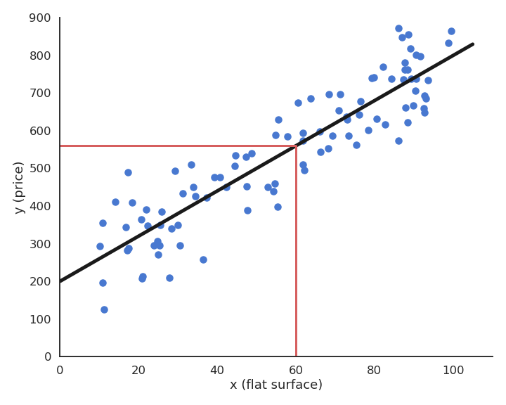
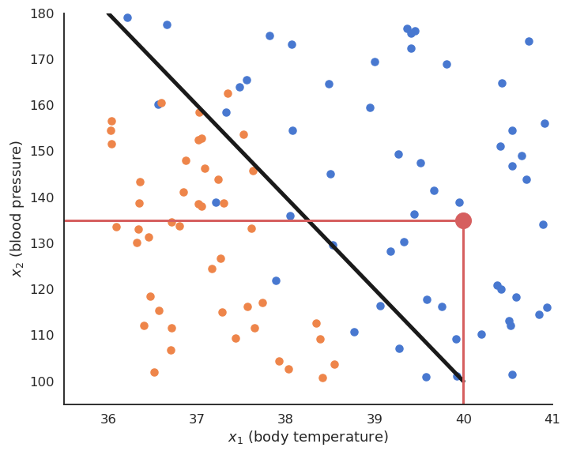
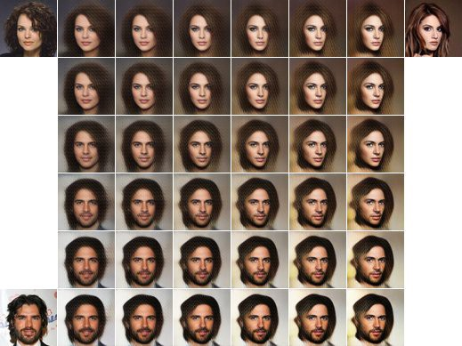

Introduction
What is neurocomputing?
Let’s first discuss the difference between Artificial Intelligence (AI), Machine Learning (ML), Deep Learning (DL) and Neurocomputing. Nowadays, these terms are used almost interchangeably, but there are historical and methodological differences.

The term Artificial Intelligence was coined by John McCarthy at the Dartmouth Summer Research Project on Artificial Intelligence in 1956:
The study is to proceed on the basis of the conjecture that every aspect of learning or any other feature of intelligence can in principle be so precisely described that a machine can be made to simulate it.
Good old-fashion AI (GOFAI) approaches were purely symbolic (logical systems, knowledge-based systems) or using linear neural networks. They were able to play checkers, prove mathematical theorems, make simple conversations (ELIZA), translate languages…
Machine learning (ML) is a branch of AI that focuses on learning from examples (data-driven AI). It is sometimes also referred to as big data, data science, operational research, pattern recognition… ML algorithms include:
- Artificial Neural Networks (multi-layer perceptrons)
- Statistical analysis (Bayesian modeling, PCA)
- Clustering algorithms (k-means, GMM, spectral clustering)
- Support vector machines
- Decision trees, random forests
Deep Learning is a recent re-branding of artificial neural networks. It focuses on learning high-level representations of the data, using highly non-linear neural networks. Many architectures have been developped, including:
- Deep neural networks (DNN)
- Convolutional neural networks (CNN)
- Recurrent neural networks (RNN)
- Generative models (GAN, VAE)
- Deep reinforcement learning (DQN, PPO, AlphaGo)
- Transformers
- Graph neural networks

Neurocomputing is at the intersection between computational neuroscience and artificial neural networks (deep learning). Computational neuroscience studies the functioning of the brain (human or animal) through biologically detailed models, either at the functional level (e.g. visual attention, decision-making) or cellular level (individual neurons, synapses, neurotransmitters, etc). The goal of computational neuroscience is 1) to provide theoretical explanations to the experimental observations made by neuroscientists and 2) make predictions that can be verified experimentally. Moreover, understanding how the brain solves real-life problems might allow to design better AI algorithms. If you are interested in computational neuroscience, make sure to visit the courses Neurokognition I and II taught by Prof. Dr. Hamker:
https://www.tu-chemnitz.de/informatik/KI/edu/neurokognition/
Neurocomputing aims at bringing the mechanisms underlying human cognition into artificial intelligence. The first part of this course focuses on deep learning, while the second will discuss how more biologically realistic neural networks could help designing better AI systems.
Applications of deep learning
Machine Learning applications are generally divided into three main branches:
Supervised learning: The program is trained on a pre-defined set of training examples and used to make correct predictions when given new data.
Unsupervised learning: The program is given a bunch of data and must find patterns and relationships therein.
Reinforcement learning: The program explores its environment by producing actions and receiving rewards.

Deep learning has recently revolutionized these types of machine learning, so let’s have a look at some concrete examples for motivation. At the end of the course, if you also perform all exercises, you should be able to reproduce these applications.
Supervised learning

In a supervised learning, we have a training set (or training data) consisting of N samples (or examples) from which we want to learn the underlying function or distribution. Each sample consists of an input \mathbf{x}_i and an output (also called ground truth, desired output or target) t_i.
What we want to learn is parameterized model y_i = f_\theta (\mathbf{x}_i) which can predict the correct output for the inputs of the training set. The goal of learning (or training) is to find which value of the parameters \theta allows to reduce (minimize) the prediction error. i.e. the discrepancy between the prediction y_i = f_\theta (\mathbf{x}_i) and the desired output t_i.
Depending on the nature of the outputs t, we have two different supervised problems:
- In regression tasks, the outputs can take an infinity of values (e.g. real numbers). The following figure shows how examples of flat surfaces (input x_i) and prices (output t_i) collected in the neighborhood can be used to predict the price of a new flat. After collecting enough samples, a model is trained to minimize its prediction error. Here, a linear model is used (black line) as we perform linear regression, but any other type of function could be used. The parameters of the line (slope and intercept) are adapted so that the line lies close to the data: the predicted price y_i is never far from the ground truth t_i. Using that line after learning, we can predict that a 60 square meters flat should be rented around 550 euros/month.

- In classification tasks, the outputs are discrete, i.e. take only a finite number of different values (called classes or labels). When there are only two classes, they are called the positive and negative classes and the problem is a binary classification. The two classes can represent yes/no binary values, such as when when a test is positive or negative. When there are more than two classes, they can for example represent different objects (car / bike / dog / cat…) that can be recognized on an image. The following figure depicts a binary classifiation problem, where two input features x_1 and x_2 (temperature and blood pressure) are used to predict the occurence of an illness (yes = ill, no = sane). The linear model is a line that separates the input space into two separate regions: all points above the line are categorized (classified) as ill, all points below as sane, even if they were not in the training data.

In practice, when using neural networks, the distinction between classification and regression is not very important, but it can be relevant for other ML techniques (decision trees only work for classification problems, for example).
Feedforward neural networks
As we will see later, an artificial neuron is a mathematical model able to perform linear classification or regression using weighted sums of inputs:
y = f(\sum_{i=1}^d w_i \, x_i + b)

By stacking layers of artificial neurons, we obtain a feedforward neural network able to solve non-linear classification and regression problems.

Fully-connected layers of neurons can be replaced by convolutional layers when dealing with images as inputs, leading to the very successful convolutional neural networks (CNN).

The “only” thing to do is to feed these networks with a lot of training data (inputs and desired outputs) and let them adjust their weights to minimize their prediction error using the backpropagation algorithm (Rumelhart et al., 1986) (more on that later). Neural networks (including CNNs) are a very old technology, dating back from the 60’s, with a resurgence in the 80’s thanks to the backpropation algorithm. They had been able to learn small datasets, but their performance was limited by the availability of data and the computing power available at the time. One classical example is the use of a CNN (LeCun et al., 1998) by Yann LeCun in 1998 to automatically classify single digits on ZIP postal codes (what led to the development of the MNIST dataset, the “Hello World!” of machine learning which we will use in the exercises).

The revival of artificial neural networks marketed as deep learning at the end of the 2000’s was principally due the availability of massive amounts of training data (thanks to search engines and social networks) and the availability of consumer graphics GPUs able to perform scientific computations, especially using Nvidia’s CUDA programming framework.
The first badge of honour obtained by deep learning methods happened during the ImageNet challenge in 2012. The challenge was made for computer vision (CV) scientists to compare their algorithms on a huge dataset of 14 billion annotated images for object recognition (what is on the image?), object detection (which objects are in the image and where?) and object segmentation (which pixels belong to which object?). The object recognition challenge was indeed quite hard, with 1000 different classes (sometimes exotic, such as “ladle” or “porcupine”) with a great variety of backgrounds or lightning conditions. Classical CV methods based on feature extraction and simple classifiers performed reasonably well, with an error rate around 30%.
However, Krizhevsky, Sutskever and Hinton (Krizhevsky et al., 2012) trained a CNN entirely on the images, without any form of preprocessing, and obtained an error rate of 15%, half of the other methods. This achievement marked the beginning of the deep learning era, attracted the attention of the major industrial players (Google, Facebook and soon the rest of the world) who have already invested hundreds of billions on AI research.
The whole field of computer vision was taken by storm, and CNNs were able to outperform the state-of-the-art of many vision-related tasks, such as object detection with the YOLO (You Only Look Once) network (Redmon and Farhadi, 2016):
or semantic segmention with SegNet (Badrinarayanan et al., 2016) or its variants such as Mask RCNN (He et al., 2018):
CNNs can even be used to control autonomous cars, by learning to reproduce human commands for a given input image (Bojarski et al., 2016):
CNNs are also gaining an increasing importance in medical applications, for example to help histologists detect cancerous cells:
Recurrent neural networks
Another field that was heavily transformed by deep learning is natural language processing (NLP), i.e. the automatic processing of language, be it text understanding, translation, summarization, question answering or even speech recognition and synthesis. In short, everything needed under the hood when you talk to Siri or Alexa.
The key neural network involved in this paradigmatic change is the recurrent neural network (RNN), with the most prominent model being the long short-term memory (LSTM) network (Hochreiter and Schmidhuber, 1997).

The main difference with feedforward neural networks is that RNNs can be applied on sequences (of words, but it could also be video frames or any time-dependent signal). At each step, a RNN produces an output not only depending on its current input, but also on its previous output, implementing a form of memory of past events.
More recent advances introduced the concept of attention for processing sequences. This is now at the heart of all translation systems, including the language understanding modules behind Google search/translate and DeepL. The neural architectures may seem complex, but we will break them down in this course.

Transformer architectures have revolutionized NLP, allowing to train a massive neural network in a self-supervised manner from raw data, i.e. without annotations, and then fine-tune it on particular tasks such as language translation, text summarization, code generation…
Unsupervised learning
In supervised learning, we use annotated data, i.e. pairs (x_i, t_i) of input/output examples. This requires to know the ground truth for each sample, what can be be very tedious and expensive if humans have to do it.
In unsupervised learning, we only have inputs. The goal of the algorithms is to make sense out of the data: extract regularities, model the underlying distribution, group examples into clusters, etc… It may seem much harder than supervised learning, as there is no ground truth to measure performance, but data is very cheap to obtain.
Clustering and feature extraction
Clustering is a classical machine technique allowing to group examples in clusters based on their respective distances: close examples should belong to the same cluster. The most well-know algorithms are k-means and Gaussian mixture models (GMM). But the quality of the clustering depends on the space in which the inputs are represented: two images may be similar not because their pixels are similar (e.g. two dark images), but because they contain similar objects (fishes, birds). Neural networks can be used to learn a feature space where distances between inputs are meaningful.

Dimensionality reduction and autoencoders
Data such as images have a lot of dimensions (one per pixel), most of which are redundant. Dimensionality reduction techniques allow to reduce this number of dimensions by projecting the data into a latent space while keeping the information.
Autoencoders (AE) are neural networks that learn to reproduce their inputs (unsupervised learning, as there are no labels) by compressing information through a bottleneck. The encoder projects the input data onto the latent space, while the decoder recreates the input. The latent space has much less dimensions than the input images, but must contain enough information in order to reconstruct the image.

Apart from compression, one important application of dimensionality reduction is visualization when the latent space has 2 or 3 dimensions: you can visualize the distribution of your data and estimate how hard the classification/regression will be. Classical ML techniques include PCA (principal component analysis) and t-SNE, but autoencoders can also be used, for example the UMAP (Uniform Manifold Approximation and Projection for Dimension Reduction) architecture (McInnes et al., 2020).
Another application of autoencoders is the pretraining (feature extraction) of neural networks on unsupervised data before fine-tuning the resulting classifier on supervised data. This allows self-taught learning or semi-supervised learning, when the annotated data available for supervised learning is scarce, but a lot of unsupervised data from the same domain is available.
Generative models
The other major advantage of autoencoders is their decoder: from a low-dimensional latent representation, it is able after training to generate high-dimensional data such as images. By sampling the latent space, one could in principle generate an infinity of new images.
One particular form of autoencoder which is very useful for data generation is the variational autoencoder (VAE) (Kingma and Welling, 2013). The main difference with a regular AE is that the latent encodes a probability distribution instead of a single latent vector, what allows to sample new but realistic outputs. For example, a VAE trained to reproduce faces can generate new hybrid faces depending on how the sampling is done:

VAE are in particular central to DeepFakes which have widely reached the media because of their impressive possibilities but also ethical issues:
Another class of generative models are generative adversarial networks (GAN) (Goodfellow et al., 2014) which consist of a generator (decoder) and a discriminator that compete to produce realistic images while trying to discriminate generated from real images.

Several evolutions of GANs have allowed to produce increasingly realistic images, such as conditional GANs who permit to generate images of a desired class, or CycleGAN which allows to replace an object with another:

Reinforcement learning
Reinforcement learning (RL) is not part of this module, as we offer a complete course on it:
https://www.tu-chemnitz.de/informatik/KI/edu/deeprl/
but it has recently gained a lot of importance when coupled with deep learning principles. Here we just present a couple of application of deep reinforcement learning to motivate you to also assist to this course.
RL models the sequential interaction between an agent (algorithm, robot) and its environment. At each time step t, the agent is a state s_t and selects an action a_t according to its policy (or strategy) \pi. This brings the agent in a new state s_{t+1} and provides a reward r_{t+1}. The reward is the only feedback that the agent receives about its action: when it is positive, it is good; when it is negative, it is bad. The goal of the of the agent is to maximize the sum of rewards that it receives on the long-term. For example in a video game, the states would correspond to each video frame, the actions are joystick movements and the rewards are scores increases and decreases. The goal is to move the joystick correctly so that the final cumulated score is maximal.

In deep RL, the policy \pi is implemented using a deep neural network whose job is to predict which action in a given state is the most likely to provide reward in the long-term. Contrary to supervised learning, we do not know which action should have been performed (ground truth), we only get rewards indicating if this was a good choice or not. This makes the learning problem much harder. But the deep RL methods are quite generic: any problem that can be described in terms of states, actions and rewards (formally, a Markov decision process) can be solved by deep RL techniques, at the cost of quite long training times. Let’s have a look at some applications:
- The first achievement of deep RL was the deep Q-network (DQN) of Deepmind able to solve a multitude of old Atari games from scratch using raw video inputs:
- Deep RL methods have since then been applied to more complex games, such as Starcraft II:
or DotA 2:
- Another famous achievement of deep RL is when Google Deepmind’s AlphaGo beat Lee Sedol, 19 times world champion, in 2016:
- Deep RL is also a very promising to robotics, be it in simulation:
or in reality:
- It is also promising for autonomous driving: